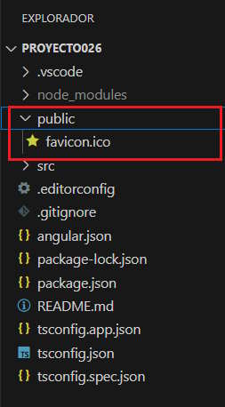
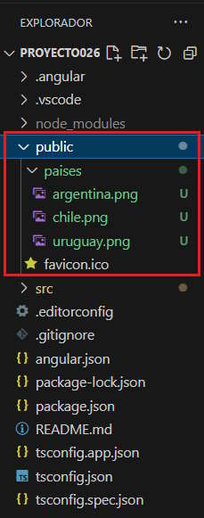
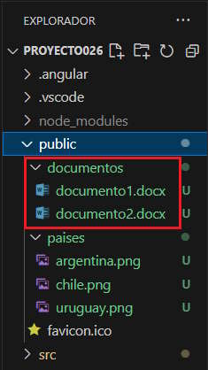
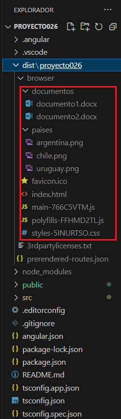

A partir de la versión 18 de Angular se crea por defecto la carpeta public conteniendo el archivo 'favicon.ico'.
En la carpeta public disponemos archivos de imágenes, videos y otros archivos (por ejemplo si tenemos una serie de archivos pdf que se descargan de nuestra aplicación) que se copiarán tal cual en la aplicación definitiva.
La carpeta public en una carpeta hija del proyecto propiamente dicho:
Podemos organizar en esta carpeta, subcarpetas agrupando las imágenes, videos y otros archivos. Crearemos una carpeta llamada 'paises' dentro de la carpeta 'public' e insertamos 3 imágenes de banderas de dichos paises:
Luego accedemos a las mismas indicando el siguiente camino:
<img src="/paises/uruguay.png">
Por ejemplo podríamos disponer una serie de documentos *.docx para ser descargados desde el sitio:
Luego accedemos a los documentos para ser descargados con el siguiente camino:
<a href="/documentos/documento1.docx">Documento 1</a>
Cuando compilamos la aplicación de Angular el contenido de la carpeta 'public' queda sin cambios y debe ser subida al servidor de internet junto con el resto de archivos.
Luego de compilar la aplicación se genera la carpeta 'dist' en la raiz del proyecto, si vemos su contenido nos encontramos que tenemos una copia con todo el contenido de la carpeta 'public':
